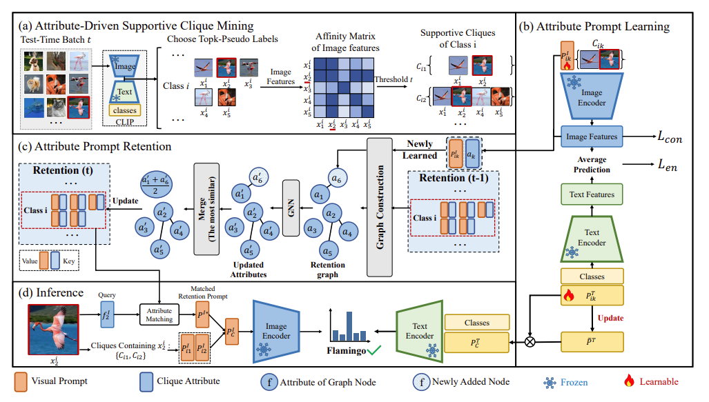

"SCAP: Transductive Test-Time Adaptation via Supportive Clique-based Attribute Prompting", CVPR 2025
作者: 张宸语(本科生)，徐昆仑(博士生)，刘子宸，彭宇新，周嘉欢
通讯作者: 周嘉欢
智能算法模型在测试阶段面对未知数据分布时，往往会发生显著的性能退化。针对为克服该问题，测试时适应（Test-Time Adaptation, 简称为TTA） 近年来受到学界关注，其目标为在测试阶段动态调整预训练模型以应对测试数据分布偏移问题。然而，现有TTA方法主要针对单个测试样本进行独立优化， 难以保障所学知识对不同样本的泛化能力，导致更新的模型性能受限。
针对上述挑战，本文提出了一种基于支撑集合属性提示学习的测试时自适应方法，通过挖掘批次数据中的视觉相似性和语义关联性，促进模型对测试域中目标鉴别性特征的学习。 具体贡献如下：（1）支撑集合挖掘：利用CLIP的视觉编码器提取图像特征，并通过计算跨样本特征相似性矩阵自动构建支撑集合。（2）属性提示学习：为每个支撑集合学习视觉和文本模态的属性提示， 分别用于提取图像和文本模态中的共享特征。（3）属性知识保存：通过构建属性提示池动态存储历史属性提示，为了避免属性提示数量持续膨胀，引入了基于图网络的属性信息交互机制， 通过相似属性信息融合和冗余裁剪，实现利用有限的存储资源进行属性更新和扩展。本文方法在多个基准测试中取得了优于现有方法的性能。
该论文的共同第一作者是北京大学王选计算机研究所2022级本科生张宸语和2023级博士生徐昆仑，通讯作者是周嘉欢助理教授，与彭宇新教授合作完成。